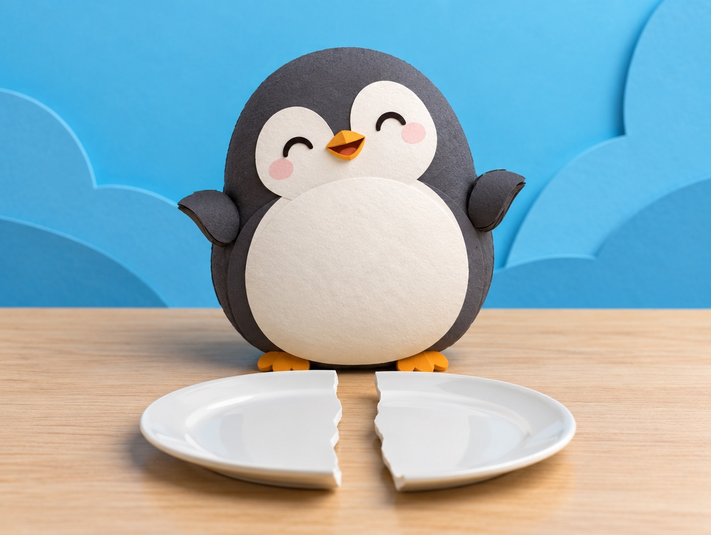

🧪 LAB · 試作 — AIが読書メモから一気に作った記事です。本番の一覧には出していません · 試作の一覧
🐧 EVERYDAY LIFE⚡ 39 SEC
You can turn a bad thing into a good meaning with "But…" ⚡

Sound Familiar
When you break a plate or miss a train, do you sometimes think about it all day?
Z Thinking
At times like that, try to think with a "Z" shape in your mind.
When something bad happens, first you feel the "bad meaning."
After that, you say "But…" and turn back to a "good meaning."
The Reason
This is because you cannot change what happened, but you can choose its meaning.
⚡ TRY IT
Walk the Z: 5 bad things
Tap the button and follow the yellow arrows in a Z to the good meaning.
1 · EVENT
I fell off my bike.I broke a plate.I did nothing all day.The train was late, so I ran.I made a mistake.
2 · BAD
Ouch! So embarrassing…Oh no, my favorite plate…I wasted a whole day…Why today?! I am so tired…I am no good…
3 · TURN
↩️ "But…"
4 · GOOD
No broken bones. And a funny story!It took the bad luck for me.The best luxury. I charged up!Good exercise!A good lesson!
Feeling bad first is OK. Then turn!
Turning… 🌀
⭐ Nice turn! Same event, better meaning.
🏆 Z master! You turned 5 bad things into good ones.
For Example
For example, if you break a plate, you think, "But it took the bad luck for me."
If you did nothing all day, you think, "But I rested well and charged up."
In Short
Feeling down at first is not a bad thing.
After you feel down, just turn back with "But…".
📚 I wrote this from my reading notes.